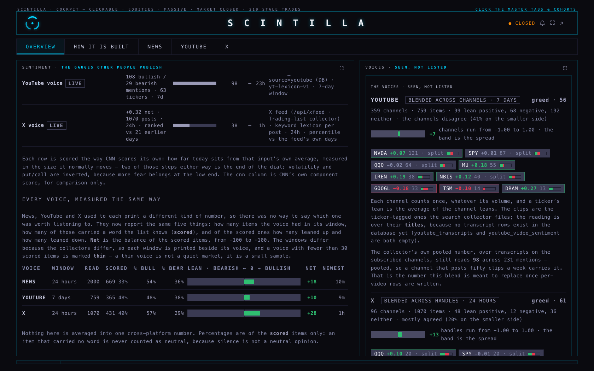
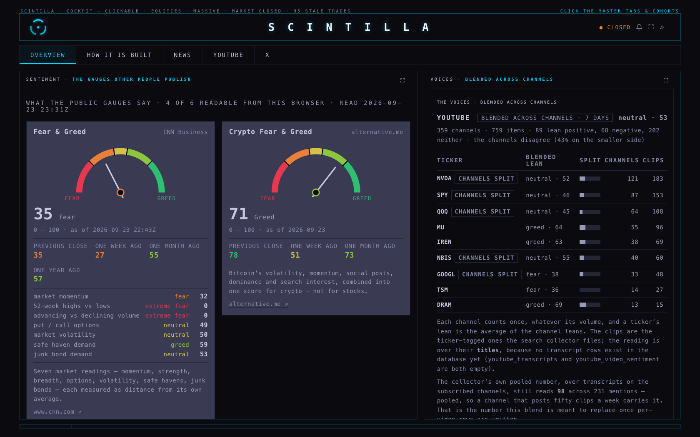
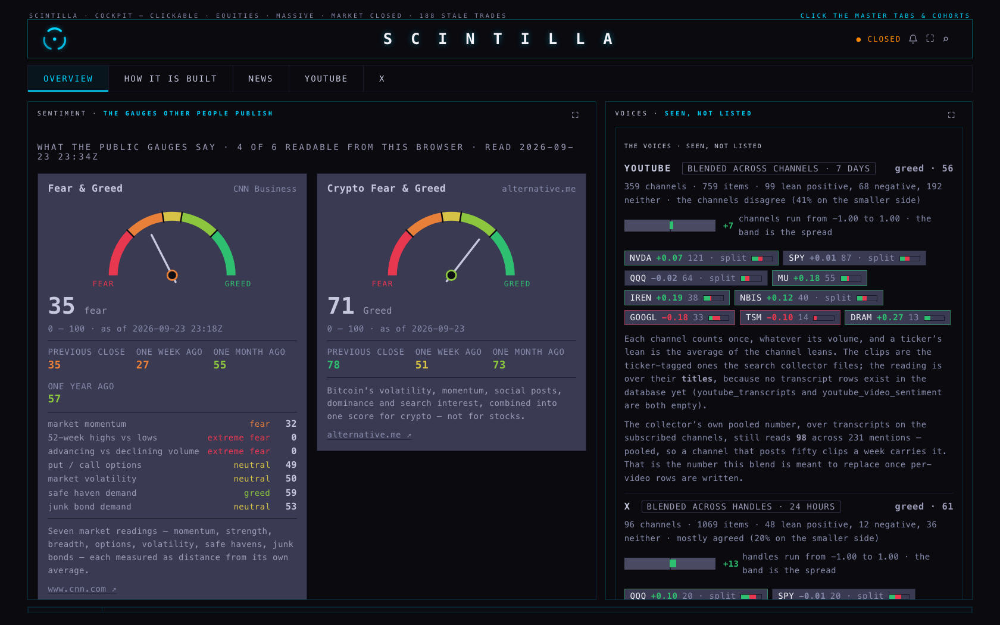
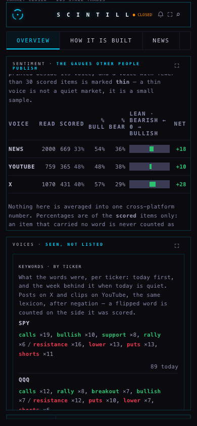
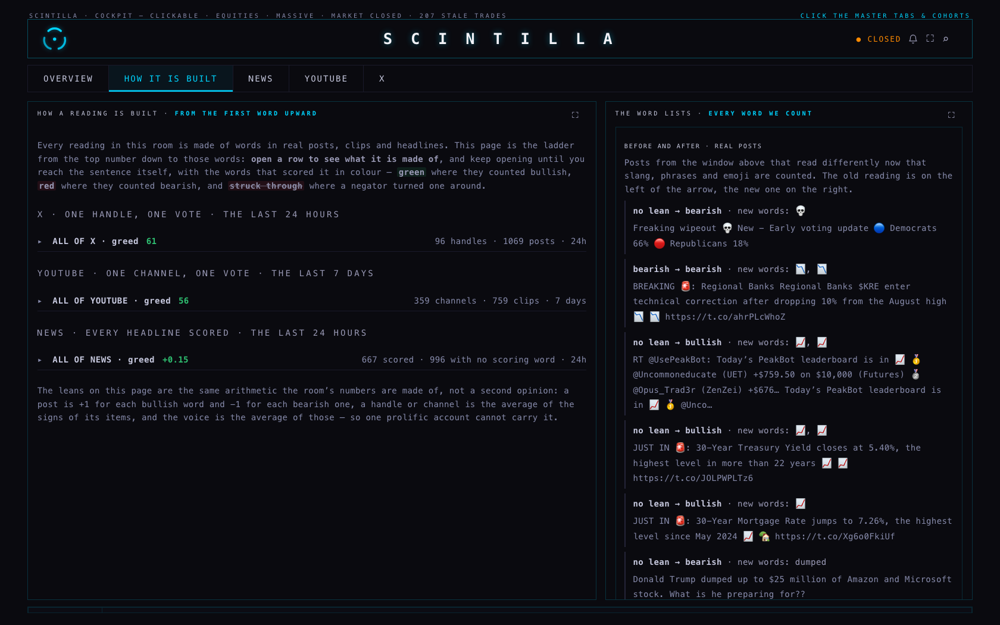
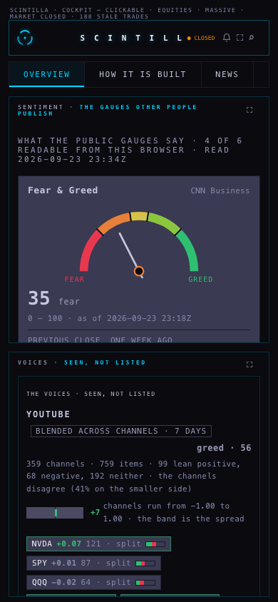
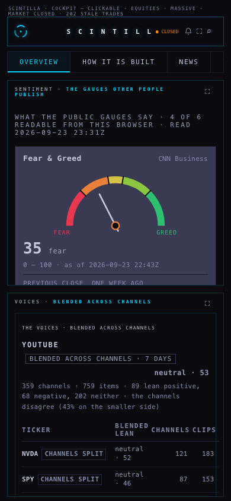

Lane M30 · 23 September 2026 · branch hub/sentiment-4-20260923 · built from the release build b6913cb · nothing deployed, nothing pushed.
You said: “News: 31 scored, 21 up, 7 down — it’s very inconsistent the way you’re measuring across platforms.” Every voice now answers the same questions:
This is what it printed when the screenshot was taken (23 Sep, 23:2xZ):
| voice | window | read | scored | % bull | % bear | net | newest |
|---|---|---|---|---|---|---|---|
| NEWS | 24 hours | 2,000 | 669 · 33% | 54% | 36% | +18 | 8m |
| YOUTUBE | 7 days | 745 | 359 · 48% | 49% | 38% | +11 | 3h |
| X | 24 hours | 1,071 | 431 · 40% | 57% | 29% | +28 | 1h |
Read that way: X is the most bullish voice today and the freshest; news is the widest but only a third of its headlines carry a scoring word; YouTube is a week-long view, so it moves slowest. A voice with fewer than 30 scored items is marked thin on the page — a thin voice is a small sample, not a quiet market.

You said the blended table was “a data dump… very not nice to see”. It is now a picture: each voice gets a lean bar with a grey band showing how far apart the channels behind it actually are, and each ticker is a chip — colour is its lean, the number beside it is how many channels or handles carried it, and the tiny two-colour bar is the split inside it.

b6913cb): a table of TICKER / BLENDED LEAN / SPLIT / CHANNELS / CLIPS.
You asked for “a keyword tracker associated to a ticker that was mentioned with”. The rail now carries KEYWORDS · BY TICKER: today first, the week behind it when today is quiet. From the same screenshot:
The words come from X posts (by their $TAG) and YouTube clips (by their ticker column), counted after negation, so a flipped “bullish” is counted on the bearish side — the same rule the score itself uses. News headlines are not in this card, and the page says so: the stored news rows keep the score and the counts, not the headline text, so their words cannot be named per ticker yet.

The old list was plain English — “bullish”, “crash”, “upgrade”. The people on these channels do not talk like that. Version sc-social-v2 keeps every old word exactly as it was (so no old number moves for an invisible reason) and adds 62 entries: slang, abbreviations, two- and three-word phrases, and emoji. Every entry carries its polarity and a note saying why it is on the list, printed on the HOW IT IS BUILT page so you can argue with it.
| entry | kind | reads as | why it is there |
|---|---|---|---|
| calls printing | phrase | bullish | upside options making money — the clearest bullish phrase in this language |
| puts printing | phrase | bearish | bearish, although it contains “printing” |
| buy the dip | phrase | bullish | bullish even though it contains a fall |
| short squeeze | phrase | bullish | the words apart would read bearish |
| dead cat bounce | phrase | bearish | a bounce the speaker does not believe |
| rekt · bagholder · ngmi | slang | bearish | wrecked; stuck holding a loser; not gonna make it |
| LFG · tendies · printing | slang | bullish | excitement; profits; a position making money now |
| 🚀 🐂 📈 💎 🔥 | emoji | bullish | the most common marks in this feed — the old scanner threw them away with the punctuation |
| 🐻 📉 💀 🩸 😭 | emoji | bearish | the same, on the other side |

A phrase is matched before its single words, so “buy the dip” is one bullish reading, not a “buy” beside a “dip”, and “puts printing” is bearish rather than a bullish “printing”. The HOW IT IS BUILT page also carries a BEFORE AND AFTER · REAL POSTS card: posts from the window on screen that read differently now, with the new words named. If nothing changed in that window, it says that instead of hiding it.
You said: “This rally was really low breadth — we need to start considering market breadth more in our mix.” There are now four breadth readings, each on its own row with its own source and age, and none of them folded into a secret composite. Measured on session 2026-09-23 over all 364 names:
| reading | what it said | where it comes from |
|---|---|---|
| Equal weight vs the index | RSP − SPY over 20 days: −5.0 points — the average stock is well behind the index | chart API daily bars, live in the page |
| Above the 50-day average | 134 of 364 · 36.8% | measured snapshot, one daily series per name |
| Above the 200-day average | 190 of 361 · 52.6% | same snapshot |
| 52-week highs vs lows | 5 highs (ABBV, AMD, CRWD, DE, TMO) against 23 lows — 18% of the extremes are highs | same snapshot; today’s high or low against the 252 sessions before it |
Together with the older row — 105 of 363 names up on the day, 29% advancing — that is a plain statement of what you saw: the index can be held up by a handful of names while most of the list is below its own 50-day average.
How the snapshot works. Breadth needs a year of daily bars for every name, which is 364 requests — far too much for a page load. scripts/breadth-snapshot.mjs reads them from the chart API (about 20 seconds, no other provider, nothing written to any price table) and writes data/breadth/latest.json plus a one-row-per-session history.json. The page reads that file and always prints when it was measured, so a stale reading looks stale instead of looking current. Today’s run is the first, so the history has one row; each later run adds one.
The brief said the collector’s heartbeat read “error” at 18:32Z. Here is what actually happened, from the collector’s own files on this MacBook:
published.com.alanharvey.scintilla-xfeed-collector is loaded, last exit code 0, with nine passes a day between 06:30 and 23:30 ET.So there was nothing to fix in the collector, and I did not change it. What was missing was that the room never showed any of this, so a stalled pass was invisible until the numbers looked wrong. The rail now carries IS THE X FEED CURRENT? — the newest post, its age, how many posts fell in the window, how many carried a scoring word, and the collector’s schedule. If the newest post is more than four hours old it says the collector has probably missed a pass.
| number | source |
|---|---|
| News read / scored / bull / bear | the stored per-headline rows (or the same scoring done in the browser when the table is absent), Loughran-McDonald plus headline verbs, 24-hour window |
| YouTube read / scored / bull / bear | youtube_videos ticker-tagged clips, last 7 days, scored on their titles and descriptions |
| X read / scored / bull / bear | the collector’s published feed at /api/xfeed, posts from the last 24 hours |
| Ticker chips and their splits | the same items, one channel or handle = one vote, whatever its volume |
| Keywords per ticker | the same items again, words counted after negation, credited to every ticker the item mentioned |
| Breadth (50-day, 200-day, 52-week) | data/breadth/latest.json, measured from chart API daily bars by scripts/breadth-snapshot.mjs |
| RSP vs SPY | chart API daily bars, read live by the page |
| The published gauges (CNN, crypto, VIX, put/call) | unchanged from before this lane |
sc-social-v2 is printed on the page so the change has a name.breadth-snapshot.mjs yet, so if nobody runs it the page will keep showing an older session — clearly labelled, but older.prototypes/indicator-lab/ is untouched./api/xfeed proxied through the production origin, because the API refuses a localhost origin.Screenshots were taken in a real headless Chromium at 1680×1050 and 390×844, against this branch served from disk. The chart API only accepts https://scintillahub.ai as an origin, so both it and /api/xfeed were intercepted and re-issued from node with that origin header — that is the only thing relaxed; no page code was stubbed and no data was faked. 27 requests were proxied, none failed, and the page reported no script errors.


Tests: node --test tests/ — 468 tests, 464 pass, 2 fail, and both are the failures that were already failing on production before this lane (“every place this surface prints an age uses the one function” and xfeed-publish). The new file tests/sentiment-stick.test.mjs adds 10 tests covering the measuring stick, the phrases and emoji, the per-ticker keywords, the spread, and the breadth snapshot’s internal consistency.